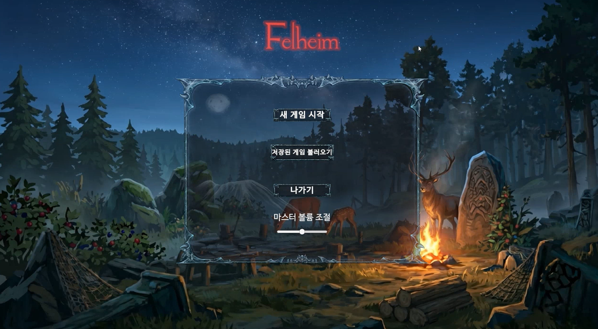
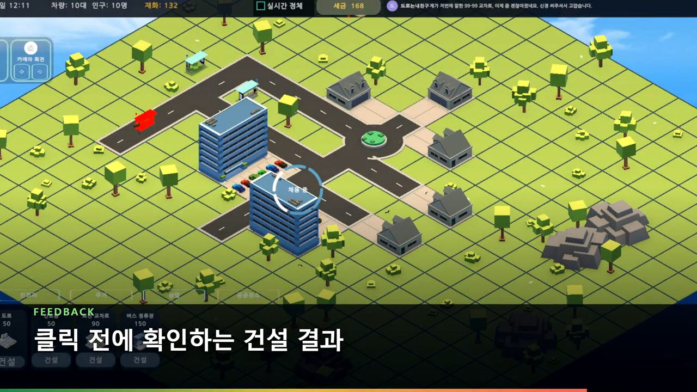

3D ACTION · WINDOWSFelheim
2인 팀 · 4주
적 행동, 아이템·버프 데이터, 구역별 Addressables 생성과 피드백 연출을 담당했습니다.
- Behavior Tree 런타임 상태 참조
- 비동기 생성과 Unity 생명주기
ENTRY-LEVEL UNITY CLIENT PORTFOLIO
Unity 팀 프로젝트에서 맡은 기능을 구현하고, 프레임 사이의 입력·런타임 참조·비동기 생명주기처럼 눈에 보이는 증상 뒤의 상태 흐름을 다시 검토한 신입 클라이언트 개발자입니다.
PROJECT
PROJECT SNAPSHOT
신입 지원자로서 출시 수치보다 프로젝트의 규모, 담당 범위, 현재 확인 가능한 코드와 영상을 먼저 제시합니다.

3D ACTION · WINDOWS2인 팀 · 4주
적 행동, 아이템·버프 데이터, 구역별 Addressables 생성과 피드백 연출을 담당했습니다.

SIMULATION · WINDOWS01
STATE FAILURE INDEX
프로젝트 이름보다 오류가 발생한 경계를 기준으로 사례를 다시 묶었습니다. 각 사례는 증상, 상태 흐름, 변경 지점, 재검증 자료 순서로 확인할 수 있습니다.
02
VERIFICATION RULE
AI가 제안한 코드든 직접 작성한 코드든 바로 결과로 주장하지 않습니다. 증상을 다시 만들고, 상태가 바뀌는 지점을 찾고, 변경 범위를 제한한 뒤 같은 조건에서 확인합니다.
입력, 실행 경로, 빌드와 상태값을 기록해 같은 증상을 다시 만들 수 있는지 확인합니다.
누가 값을 만들고, 어느 객체가 참조하며, 프레임과 생명주기 경계에서 무엇이 끊기는지 추적합니다.
테스트·영상·Git 기록으로 확인한 결과와 아직 측정하지 않은 성능 효과를 분리합니다.
코드 비교, 변경 기록, 실행 영상 또는 회귀 테스트로 확인할 수 없는 내용은 대표 성과에서 제외했습니다.
확인된 기술 범위Unity / C# / Behavior Tree / Addressables / Scriptable Object / Observer Pattern / DOTween
03
PROJECTS
2인 팀 · 4주 · 3D 액션
Behavior Tree · 데이터 구조 · 구역별 로드 · 피드백 연출
2026.05.28 — 06.24
완료
Behavior Tree로 적 행동을 노드 단위로 나누고, 던전 진입 시 전체 몬스터를 생성하던 구조를 문 트리거 기반 Addressables 비동기 로드 방식으로 변경한 프로젝트입니다.
던전 진입 시 몬스터가 함께 생성되고, 적 행동 규칙과 수치 조정 지점이 기능별로 흩어져 있었습니다.
2인·4주 프로젝트에서 기존 AI 패키지와 Unity 생명주기를 고려하며 담당 범위 안에서 구조를 변경해야 했습니다.
행동을 노드와 데이터로 분리하고 로드 시점을 문 상호작용으로 늦췄습니다. 성능 효과는 Baseline 측정 전까지 결과로 단정하지 않았습니다.
IMPLEMENTATION DEBUGGING
Blackboard 값이 예상대로 동기화되지 않아 적의 공격 쿨타임이 무시됐습니다.
공격 노드의 조건과 값 갱신 시점을 따라가며 컴포넌트가 사용할 Blackboard 참조 지점을 좁혔습니다.
외부 패키지 소스를 직접 변경하지 않고 BehaviorGraphAgent의 BlackboardReference를 컴포넌트 레벨에서 참조하도록 분리했습니다.
동일한 전투 흐름을 반복해 설정한 공격 주기가 적용되는지 다시 확인했습니다.
CheckCooldownCondition.cs · Unity Version Control · /main/develop/Geon · Changeset 74 → 164
if (lastAttackTime == null || cooldown == null)
return false;
return Time.time - lastAttackTime.Value
>= cooldown.Value;float lastTime = lastAttackTime.Value;
float coolTime = cooldown.Value;
var bAgent = GameObject.GetComponent<
Unity.Behavior.BehaviorGraphAgent>();
if (bAgent != null &&
bAgent.BlackboardReference != null)
{
bAgent.BlackboardReference.GetVariableValue(
lastAttackTime.Name, out lastTime);
bAgent.BlackboardReference.GetVariableValue(
cooldown.Name, out coolTime);
}
return Time.time - lastTime >= coolTime;외부 Behavior 패키지는 수정하지 않고, 조건 노드가 실제 Agent의 BlackboardReference에서 같은 이름의 값을 읽도록 변경했습니다.
로딩 중 오브젝트 비활성화와 코루틴 중단이 겹치며 몬스터 생성 상태가 꼬였습니다.
Addressables 완료 시점과 Unity 오브젝트 생명주기가 충돌하는 재현 경로를 확인했습니다.
렌더러·충돌체 제어와 생성 완료 콜백을 분리하고 중복 생성 방지 조건을 추가했습니다.
같은 던전 진입 경로에서 로딩 완료와 생성 상태가 끝까지 이어지는지 반복 확인했습니다.
DungeonDoor.cs · Unity Version Control · Changeset 168 최초 반영 코드
// 재현 흐름을 단순화한 의사 코드
StartCoroutine(SpawnEnemiesCoroutine());
gameObject.SetActive(false);
// 비활성화된 MonoBehaviour의
// 대기 중 코루틴이 중단됨isOpened = true;
HideDoor();
StartCoroutine(SpawnEnemiesCoroutine());
private void HideDoor()
{
Renderer[] renderers =
GetComponentsInChildren<Renderer>();
foreach (var r in renderers)
r.enabled = false;
Collider[] colliders =
GetComponentsInChildren<Collider>();
foreach (var c in colliders)
c.enabled = false;
}
// SpawnEnemiesCoroutine 마지막
gameObject.SetActive(false);이 파일은 최초 저장된 Changeset 168부터 수정 형태로 포함되어 있습니다. 왼쪽은 과거 리비전이 아니라 확인한 오류 흐름을 단순화한 의사 코드입니다.
Scriptable Object·Observer Pattern, Behavior Tree, Addressables 비동기 스폰, 동적 UI, 제단 연출과 Audio Ducking 구현을 확인할 수 있습니다.
영상의 성능 관련 설명은 구조 변경 의도입니다. 개선 수치는 Baseline 측정 후 보완할 예정입니다.
5인 팀 · 6주 · 방치형 시뮬레이션
건설 입력 · 배치 피드백 · HUD · 공용 Prefab 연결
2026.07 — 08
완료
차량 이동 → 코인 획득 → 건물 해금 → 도시 확장으로 이어지는 방치형 도시 건설 시뮬레이션입니다. 건설 입력, 배치 상태 Ghost, UI Raycast, HUD와 공용 Prefab 연결을 담당했습니다.
빠른 드래그에서 도로가 끊기고 오래된 입력 요청이 쌓였으며, 배치 가능 여부를 클릭 전에 판단하기 어려웠습니다.
5인 팀의 공용 Canvas·Prefab·건설 데이터와 연결하면서 기존 기능의 입력 흐름을 유지해야 했습니다.
입력 위치 보간과 오래된 요청 폐기를 적용하고, 초록·빨강 Ghost로 클릭 전 배치 가능 여부를 표시했습니다.
IMPLEMENTATION DEBUGGING
드래그 속도가 빨라지면 입력 프레임 사이 타일이 누락되어 도로가 끊기고 오래된 요청이 남았습니다.
이전 입력과 현재 입력의 그리드 좌표가 멀어질 때 중간 셀을 검사하지 않는 흐름을 확인했습니다.
두 좌표 사이의 셀을 보간해 경로를 채우고, 새 입력과 멀어진 오래된 건설 요청을 폐기했습니다.
같은 드래그 경로를 다시 실행해 도로 연결을 확인하고 UI 위 입력은 Raycast 검사로 차단했습니다.
PlacementController.cs · GitHub PR #253 ↗ · base ce714d2 → merge d456474 ↗
Vector2Int cursor = from;
while (cursor.x != to.x)
{
cursor.x += Math.Sign(to.x - cursor.x);
TryPlaceDragTile(cursor);
}
while (cursor.y != to.y)
{
cursor.y += Math.Sign(to.y - cursor.y);
TryPlaceDragTile(cursor);
}Vector2Int cursor =
_currentType == TileType.Road &&
_roadStrokeLastAcceptedCoord.HasValue
? _roadStrokeLastAcceptedCoord.Value
: from;
while (cursor.x != to.x)
{
cursor.x += Math.Sign(to.x - cursor.x);
if (!EnqueuePlacement(cursor,
ResolvePlacementDirection(cursor),
notifyOnRejected: false))
return;
}RoadStrokeRelease_DrainsEveryAcceptedTileInOrder
드래그가 끝난 뒤 승인된 (0, 0)~(0, 3) 좌표가 순서대로 처리되는 시나리오를 추가했습니다. PR 기록상 전체 .NET build는 기존 DOTween 참조 오류로 완료하지 못해, 해당 제한도 함께 남겼습니다.
TTS 음성을 제거하고 기존 화면 자막은 유지한 포트폴리오용 편집본입니다.
04
CLIENT STATE LAB
장르와 기능은 달랐지만 문제는 같은 질문으로 모였습니다. 상태의 주인은 누구인지, 실행은 어디서 끊기는지, 프레임 사이에 무엇이 사라지는지를 확인했습니다.
설정값과 런타임 값이 함께 존재할 때 실제 행동을 결정하는 기준점을 하나로 좁힙니다.
Blackboard 사례 보기 ↗비동기 작업을 시작한 객체의 활성 상태와 완료 시점을 분리해 실행 흐름이 끊기지 않게 합니다.
Addressables 사례 보기 ↗프레임마다 관찰된 지점만 처리하지 않고, 이전 상태와 현재 상태 사이의 누락 구간을 복원합니다.
드래그 입력 사례 보기 ↗MMORPG CLIENT CONNECTION
네트워크 구현 경험을 성과로 주장하는 항목이 아닙니다. 현재 확인한 클라이언트 상태 관리 경험을 바탕으로 확장해 학습하는 영역입니다.
05
AI-ASSISTED DEVELOPMENT
프로젝트 구현 과정에서 AI 개발 도구를 적극 활용했습니다. 현재는 AI 사용 자체를 역량으로 내세우기보다, 대표 사례의 호출 흐름·상태 변화·수정 이유를 다시 검토해 설명 가능한 지식으로 전환하고 있습니다.
증상과 기대 결과를 구분합니다.
변경 대상과 위험 범위를 먼저 확인합니다.
AI로 관련 코드, 대안과 테스트 초안을 찾습니다.
diff, 실행 흐름과 제한 사항을 다시 확인합니다.
변경 이유와 검증 결과를 추적 가능하게 남깁니다.
DIRECT REVIEW
AI ASSISTANCE
AI 사용량 자체를 성과로 주장하지 않습니다. 이 페이지의 대표 사례는 현재 코드 흐름과 근거를 다시 확인한 범위이며, 아직 설명하거나 검증하지 못한 기능은 핵심 사례에서 제외합니다.
KNOWLEDGE TRANSFER
입력과 이벤트가 시작되는 메서드를 확인합니다.
객체별 책임과 변경되는 값을 흐름도로 정리합니다.
같은 조건에서 증상과 수정 결과를 확인합니다.
수정 이유, 대안과 남은 한계를 코드 기준으로 말합니다.
06
BACKGROUND
ENTRY-LEVEL GROWTH
프로젝트 코드를 다시 읽으며 OOP의 책임 분리와 의존 관계를 정리합니다.
호출 스택, 상태값과 재현 조건을 확인하고 작은 변경을 직접 검증합니다.
현재 상태 관리 경험을 패킷 순서와 클라이언트·서버 동기화의 기본 개념으로 확장합니다.
CONTACT